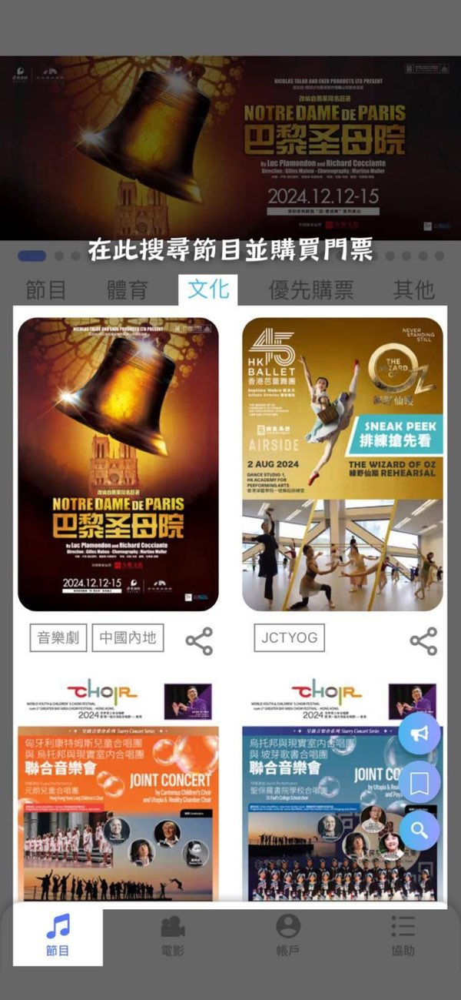
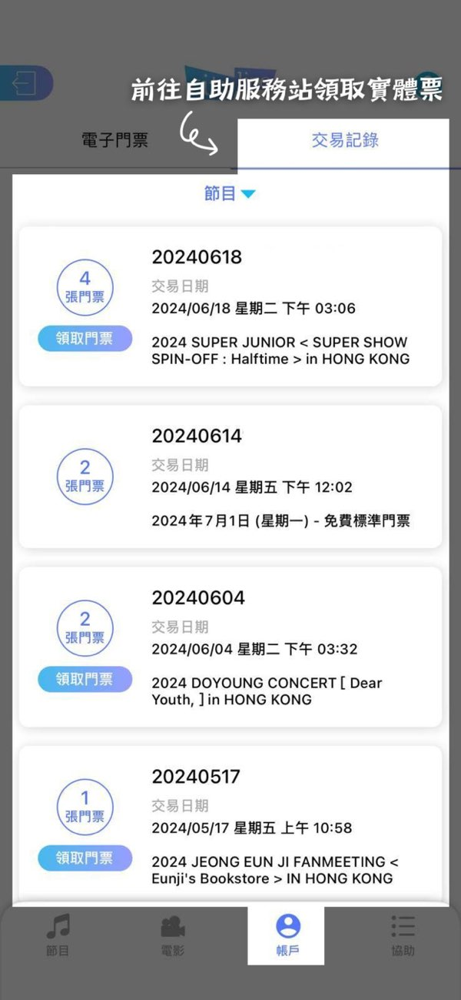

购票通全解析：从抢票到取票，九个问答搞定 Cityline
整理了关于 Cityline 购票通最常被问到的九个问题，从平台定位、账号注册、手机应用安装到选座预留机制、交易安全细节、自助取票点分布，覆盖购票全流程的疑惑与实操坑点。
整理一篇关于 Cityline 购票通的快问快答——不管你是第一次在港澳买票的内地观众，还是已经用了几次但还有疑惑的老用户，这九个问题应该把你想问的都问到了。
购票通是什么？跟其他票务平台有什么不一样？
购票通是香港 Cityline (Hong Kong) Limited 运营的票务平台，服务范围覆盖香港、澳门以及大湾区多个内地城市。跟很多纯线上的票务平台不同，购票通除了官网和手机应用，还运营着一张遍布港澳与大湾区的自助服务站网络——从港铁西九龙站到深圳滨海艺术中心，从亚洲国际博览馆售票处到广州正佳广场，观众可以就近提取实体票。这张线下网络是它区别于同类平台的标志性配置，也是很多跨境购票用户选择它的原因。

哪些人会用到购票通？
最核心的两类用户：一类是居住在香港、澳门的本地观众，买票看演唱会、舞台剧、体育赛事；另一类是大湾区内地城市的观众，跨境赴港澳看演出，或者直接在深圳、广州、佛山等地的自助服务站取票。此外，经常往返港澳的旅客、在港澳短期工作学习的内地人士，也会因为演出或赛事票务的需求接触到这个平台。
账号怎么注册？必须用手机号吗？
不必须。购票通支持三种社交账号直接登入：Google、Facebook 和 Apple，不需要单独注册新账号。三种方式的数据边界不一样：Facebook 只负责身份验证，不会以你的名义发布任何内容；Google 会获取部分特定资料，授权可以随时在 Google 账号设置里管理或撤销；Apple 最干净，只共享姓名和电邮地址两项。如果你已经习惯了其中某个平台的账号体系，直接用对应的登入方式最省事。
手机应用在哪里下载？怎么确认装的是官方版？
iOS 用户直接在 App Store 搜索「Cityline Ticketing」就能找到，要求 iOS 13.0 或以上版本。Android 用户有两个渠道：Google Play 常规搜索，或者不方便用 Google Play 的，也可以从cityline下载拿官方安装包——这是官方为不便于使用 Google Play 的用户预留的路径。装之前核对三件事：开发者名称必须是 Cityline (Hong Kong) Limited，应用名称是 Cityline Ticketing，图标是蓝色 Cityline 字样标识。如果是 Android 直装包，装完记得回系统设置关闭未知来源安装权限，不要下载任何来路不明的「破解版」「加速版」。
选好了座位，是不是就锁定了？
绝对不是。购票通用「购物篮预留」机制管理选中的座位——选座时，这几个座位会放进购物篮，预留一段时间让你继续完成交易，预留期内其他用户看不到也买不到。但预留期满仍未付款，系统就会释放座位，重新对所有人开放。官方没有公布统一的预留时长，不同节目可能由主办方设定，实操上默认「时间不长」，选座后尽快进入付款环节，别在购物篮里长时间停留。这个机制也解释了几个常见现象：座位突然被收走是因为停留太久释放了；好座位失而复得是因为之前有人预留到期了；开售后的回流票集中出现在特定时间点，就是大批预留超时的座位同时回到了票池。
付款的时候有哪些安全细节要注意？
购票通网站全程用 SSL 加密传输，浏览器地址栏应该显示锁形标志，没有的话不要输入任何付款资料。信用卡付款时，发卡机构会要求完成持卡人身份验证——Visa 叫 Visa Secure，万事达卡叫 MasterCard ID Check，美国运通叫 SafeKey，验证通常由发卡银行通过短信或银行应用的确认页面完成，别把验证码告诉任何人。购票时只开一个浏览器窗口，官方明确建议多个窗口同时交易可能导致交易中断或重复扣款。按下「确认」后交易不可取消也没有退换，操作之前核对清楚金额、数量和票价档位。更详细的安全机制与账号资料说明可以去cityline文档里翻。
电子票和实体票怎么选？
两种形态都支持。电子票通过手机应用管理，动态门票直接存在账户里，入场时在现场扫码即可；实体票需要到自助服务站或场馆售票处提取。如果是跨境出行，电子票当然最方便，不用专门跑一趟取票；如果想留纸质票根做纪念，或者场馆要求实体票入场，就得提前安排取票。取票前先确认主办方指定的取票日期，有些节目不开放提前取票，白跑一趟浪费时间。

自助服务站在哪里？选哪个点比较方便？
网点大致分四类：交通枢纽类（西九龙高铁站、港铁九龙塘站、罗湖站）适合跨境或通勤路线上顺手取票；场馆售票处类（亚洲国际博览馆、香港演艺学院）适合演出当天早到随取随进；零售商业类（顺丰站、AIRSIDE、曼坊）遍布港九新界，按住处就近选最实用；大湾区跨境网点覆盖深圳、广州、佛山、惠州、江门、中山、珠海，还有澳门的银河综艺馆和雅辰酒店。选点思路很简单：经高铁赴港就西九龙站，香港市内就就近找顺丰站，大湾区居住就查本地跨境网点，演出当天早到场馆内取。注意营业时间差异很大，从 24 小时到仅工作日日间开放都有，出发前逐点核对。
抢热门演出有什么实操技巧？
三条最管用的。第一，提前想好档位和志愿，进场后快速决策，不要在购物篮里犹豫，留给你的时间窗口可能只有几分钟。第二，选座时先锁定一个可接受的座位完成交易，不要追求完美的中间位置——购物篮里多待一秒，座位被释放的风险就高一分。第三，付款环节出错时换支付方式要快，超时直接导致座位释放交易失败。另外，开售后不要马上放弃，留意 15 分钟和 1 小时左右的时间点，这是预留座位集中释放的窗口，有机会捡漏到意外好座位。
最后一句：如果你经常去港澳或大湾区看演出，购票通值得装一个——自助站网络和电子票管理是它最实用的两个特性，注册用 Apple 账号最省心，抢票记得快准稳。整理这套中文说明的仓库在GitHub、Gitee和GitCode都能找到，各取所便。